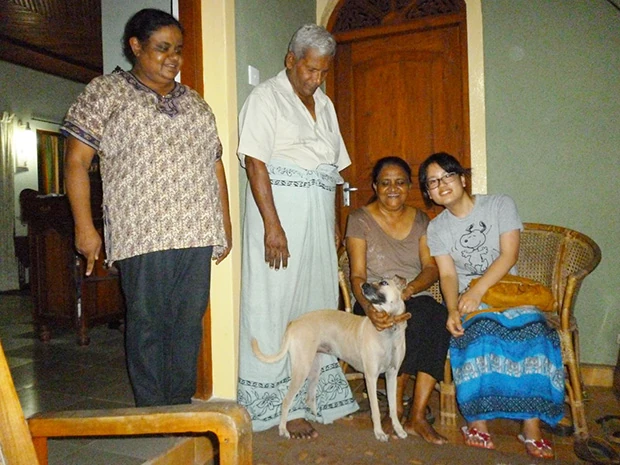
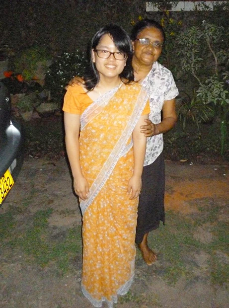
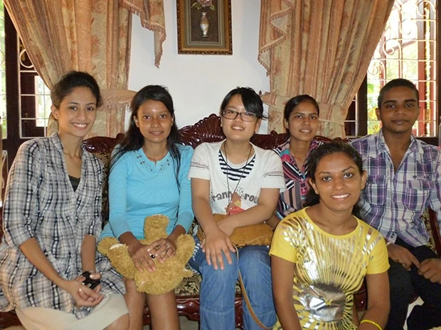
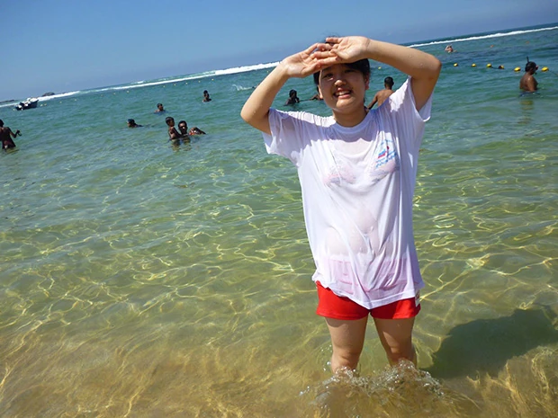
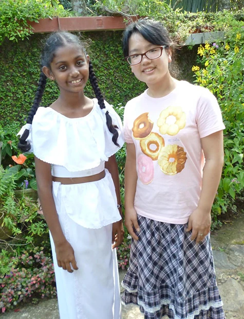
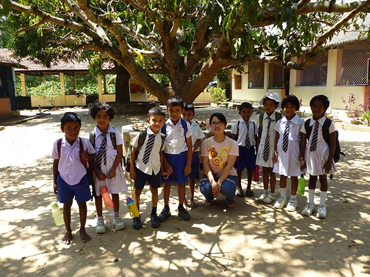
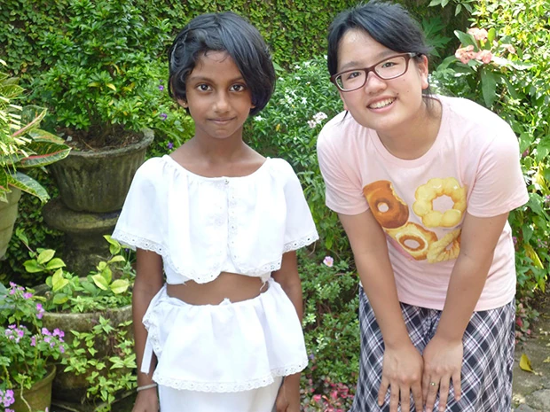

「ホームステイをしながらも英語の勉強やボランティアに参加できること、そして物価が安いので、参加を決めました。
英語のレッスンは、先生が英語のレベルアップの手助けをしてくれました。
私の興味のあることにお題を絞ってくれて、楽しく学べました。
レベルに伸び悩んだ時は励ましてくれました。
１日に数時間のレッスンでしたが、全然苦になりませんでした。
宿題は、『できる範囲で』と言ってくれて、無理なく勉強できました。
私は、英語レッスンの他にシンハラ語も興味があったので、どっちも学べてお得でした（笑）。
ホストファミリーとの生活は、とても楽しかったです。
まずお互い英語が喋れたので会話に困らず、トラブルも避けることができました。
一緒に買い物をしたり、何でも教えてもらったり、逆に日本のことを伝えたりと、いつも一緒にいて何かしてました。
ファミリーのおかげで素敵な思い出が沢山できました。
お別れが本当にさみしかったです。
とても温かいファミリーでした。
出会えて良かったです。


私のホームステイは、２週間でしたが、もっと長く居たくなりました。
辛い食べ物も楽しみ、暮らしも楽しみ、ファミリーとの時間も楽しみと、とにかく満喫できました。
南国の変わった物や主食のカレーを味わって、イモリやクモと共同生活して（笑）、ファミリーに色々な場所に連れて行ってもらって、スリランカの良さを知ることができました。
低開発村視察に行きましたが、『低開発』なんてとんでもないと思いました。
自然のことを大切にしているスリランカらしい雰囲気が好きです。
日本では見られない建て物（小屋？）や現地の人達の農作業の様子を見れて面白かったです。
村の人達も温かく迎えてくれました。

スリランカに行く前は『生活が不便になるかも』と思っていました。 でも全然困りませんでした。
日本のように電化製品を完璧に揃えてるとか、水が奇麗とかではないけれど、時間をかけたり水であれば買ったりといくらでも解決できました。
また、予想以上に仏教への信仰心がみんな強くて驚きました。
行く前も行った後も気候や人々が『温かい』という印象はそのままです。
また、是非スリランカへ行きたいです。
ホストファミリーのところにまた遊びに行くと約束しました（笑）。
留学プログラムも利用できたらしたいです。
何かと小まめに丁寧にプランを練ってくれるし、『ホームステイ+英語レッスン』という形が自分に合っています。

もっと、長期間のホームステイにすれば良かったと思いました。
長期間にすれば料理も覚えられたし、遠い所にも観光しに行けたし、ファミリーとも更に仲良くなれたなと思いました。
虫さされたあとの薬をもっと沢山持って行けば良かったです。
予想以上に刺されて、あっという間に無くなりました（笑）。
あとは、細かく教えていただいて何も困らなかったです。
以前、ロシアに１週間行ったことがありましたが、ロシアや日本と比べるとスリランカはとにかく生活の中心に『自然』があると思いました。
植物や動物も大切にしている感じがすごく好きです。
また、シャイではあるけれども笑顔で話しかけてくれたり、日本語を勉強している人が多かったり、親日的ですごく嬉しかったです。
その他では、交通事情が日本と全然違うので、車に乗ったり道路を歩いたりする度に危険だと思いました（笑）。


ボランティアで日本語教師を少ししてきました。
とにかく子供が可愛かったです。
小さくても、英語が喋れるので驚きました。
スリランカの子は歌が好きなので、もっと日本の童謡を覚え直してくれば良かったです。
１９歳の私でも何とかボランティアが務まったので、他の人にもやって欲しいです。
Beインターナショナルも現地受入団体もどちらも丁寧な対応をしてくれました。
困ったことがあったら、すぐに柔軟に新しいプランを練ってくれたり、小まめに連絡をいただいたりとにかく良くしてくれました。.
スリランカは、本当に良かったです。
素敵な思い出が出来ました。
大変お世話になりました。ありがとうございました。」
